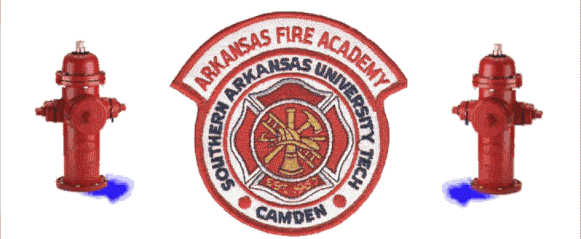
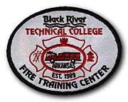

Admin, i also killed your background sound. it sucked, i was listening to music and then all the sudden this nasty stuff was comming from my hardware....i traced it to your site. if you don't clean up your act, I'll report it to...uh, the secrert service computer crime unit....[i never can spell that right]
Hey, admin, sorry I screwed up some of your graphics. I just wanted to show off some new banners [well, only one at this site] our crew has.
I have no real reason for defacing this site, I'm just having a bad day. I don't want to trash data, because that wouldn't be fun for the admins. Even if they are stupid. I think I've only ever really trashed one site. I deleted like 30 meg of data. Like, real data. I don't think it was backed up, but there's so much other stuff on that site that nobody even noticed. It was some werld event calender thing. I'm not going to give a url; attrition.org never archived it.
So, enough about you already. I'm listening to the rain fall outside right now. I should be doing homework right now, but, I'm not. This is so much funer. The problem is that my typing is louder then the rain. Ahh, well, I'll listen to a Fanmail song. I like the Police version better, but this'll do. It's the Every Breath You Take Song. Actually, I'm more in the mood for this.
Now for the poinful part of this defacment. Oh, by the way, I can't spell. The problem with 1mc right now is that everybody's got these animal names. i started with penguin^, [actually, sP, but that's a long story and for another hack =] and then i suggested to ____ [sorry d00d] that he be l33t%phrog. then, _____ needed to get a name. i said not to be an animal, becuase we already had two phuxing animals....but, no. he couldn't be left out. i have no hard feelings to anybody involved in this, but i just wanted to express my...uh, ...what's the word? ambivalence i think.
l33t%phrog - i got your CD =-)
rabid#wombat - get pictures of retard. i'll find a p0rn site and hack it and put his pics on it. it'll be funny.
see what i mean about the names? ahh!
i'm getting Windows Millennium Edition build 2146 [or somethin'] right now. some nice guy is DCCing it to me on IRC. nice guy.
okay, the Barenaked Ladies suck. their new song especially. i used to like them, but then i grew up. i'm listening to the old Every Breath You Take song by the Police...this is music. Blink182 sucks too, lots of groups do. i used to like them all. now i like pop, punk and heavy rock (also nin stuff, whatever the fuck that is). anything between pop and heavy rock is just l4m0. it is. they try to be real, like Nirvana or Buckcherry [one word, weird, i know], but just go on sucking and making money along the way. some people write poety to get their feelings out, this is so much funer. damn, MS Frontpage has put those little red lines under 'funer' each time. i wonder how you actually spell that. oh well. becuase none of you lamers have 3-mailed me, i'm going to let off with the e-mail thing. so hey, there's no stopping penguin^ from doing his shit now. if i think god wants me to stop, i will. if the feds come knocking at my door, too bad for them =P
god is cool, Manson sucks
i'll repeat that: Manson sucks [literally, yes, and also a term of speech].
now that all that is cleared up, i'll say my real message:
i've heard that FCPS Technology Education 7 course isn't fun. well, is boring actually. that's what my sources tell me...RABID%WOMBAT!!!!
i'm listening to 98 degrees now. yes, you heard me. they're pretty good. the only people that think real music like this is for girls are the same asses that like Blink and the other lame music on the radio. i'm listening to invisible man. if you don't have that mp3, you should get it. i like it.
actually, this song is fiting. damn. it's about a guy and the girl he likes doesn't know he's alive. you might say that never happens. well, it does. the person i like, [cough, zip]...not like...well, yes, i like her. i admit it l33t%phrog. now shut up =P
so if you think 98 dregrees is for gay people and NiN for suicidal druggies, think again. ass. listen to the lyrics. blink182 is just about like scoring. it's so lame. nin talks about life and stuff, 98 degrees about love and i don't know what else. regular rock talks about nothing. that's why i hate it.
-penguin^
[attrition.org or anybody else that cares, start writing this shit down as penguin^ instead of 1mc.]
The Arkansas Fire Academy serves as a resource for the Arkansas
Fire Service and related organizations by providing professional education in fire
fighting. This education involves the practices and standards established by state
and national authorities as well as state-of-the-art techniques of fire management, and
thorough equipment and safety training.
Current Training Facilities
Main Campus |
100 Carr Road East Camden, AR 71701 Admin Office: 870-574-1521 |
Northeast Arkansas |
3105 Fire Academy Drive Jonesboro, AR 72404 |
| Northwest Arkansas Fire Training Satellite Center |
118 Industrial |
Northcentral Arkansas |
P.O. Box 818 Marshall, AR 72650 |
| Central Arkansas |
6612 Wayne Drive
|
Associated Training Centers

P.O.Box 468
Pocahontas, AR 72455
Cassatot Technical College |
Hwy. 70 West P.O. Box 960 DeQueen, AR 91832 |
E-mail comments or suggestions to:
The Academy
Arkansas Fire Academy
P. O. Box 3499
Fax (870) 574-0817
Attention: Jeff Fortney
(870) 574-1521